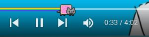
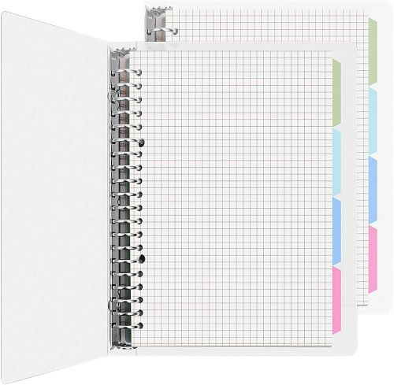
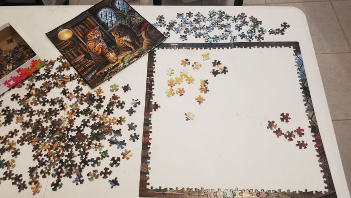
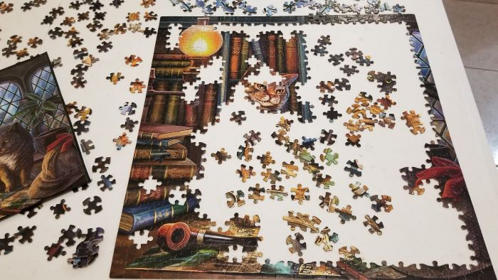
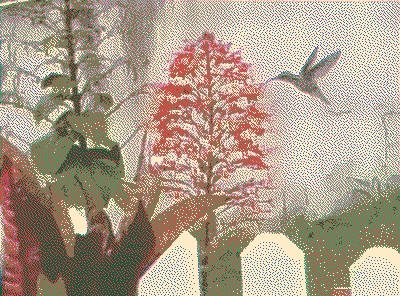
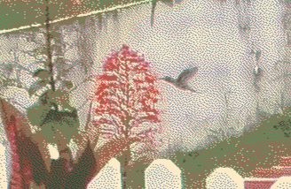
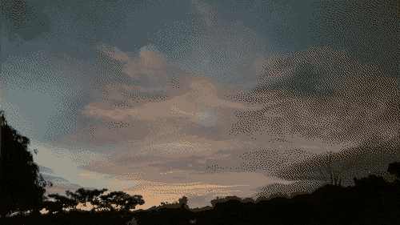

learning to code... again29.aug.23
i am falling asleep with my hand on the mouse like bruh...  but i feel like talking for a little bit.
but i feel like talking for a little bit.
so in my previous journal log (oh yeah i renamed this to "journal logs" instead of "diary logs" since they arent... daily) i mentioned that learned HTML and CSS from templates, messing around with them, til i eventually got the hang of it and knew enough vocabulary to be able to ask google just in case there was something missing in my coding. and this worked for me!! i can, after all, do layouts from scratch which is amazing to me!
but glancing through w3schools HTML and CSS intro tutorials, i noticed that i did not know some of the things that were shown at the very beginning of these tutorials so i went "damn..." so i've been reading the tutorials and going "ooooooooooh" a lot at tiny things i missed out on.
i finished the HTML tutorials and def the main take away from that one was structure and how important it is for those with screen readers and such.
honestly this gave me the motivation to clean the coding of some of my pages and make it more clean and nice like my gaming log and its pages, and my listening log pages. i've also been starting to add alt text to imgs on my site. and man let me tell you it has been A Lot of work. but i do want my website to be as nice and presentable as i can make it out to be.
with all of the tidbits that i have been learning, i noticed that my homepage could be a whole lot better as well!!! but rather than fixing it right now, i am currently in the process of building version 3 of my homepage! here's some changes i plan to have on this version!
- smaller screens compatible / make it more compact - my homepage pretty much takes the entire screen of my 15inch laptop so i'm currently planning to make it a bit more compact or at least make it responsive when you resize the window
- better structure - meaning make use of the HTML tags such as nav, headings, footer, etc.
- alt text on imgs
- remove marquee with imgs - this one is more of a preference rather than a quality of life change. when i changed browsers, i noticed that marquees dont scroll by smoothly compared to chrome and i quite honestly hate looking at it so i will be taking this out
 I WILL add some stamps and blinkies somewhere in the homepage tho!
I WILL add some stamps and blinkies somewhere in the homepage tho!
i'm still working on the sketch for the layout!! but that is my current plan for the future version of doqmeat :3
changes25.aug.23
okay gamers. so big news (not really) i downloaded firefox! yay! goodbye operagx..... yes its true i used opera gx before this.... after seeing their fucking vtuber on my startup screen on the browser i was like "yeah lets give firefox a try". probably for the best.
it took me a bit, mainly because opera gx has this thing where you could choose from your clipboard when uploading a file and i was REALLY used to it. i love copying images and uploading them from my clipboard. it is one of my favorite activities. lucky for me i managed to find an extension on the mozilla add-ons website and since then i havent looked back. good ridence operagx! you will not be missed
and of couse i couldnt forget the add-on that converts the youtube bar into nyan cat!!!  it's probably the 2nd thing i install when i have a new browser. so important. i've had that add-on in all of my browsers ever since i've access to the internet. i love nyan cat so much 
 nyan cat is like The Thing that i think about when i think about younger me being on the internet. such a nostalgic creature.... poptart cat..................
nyan cat is like The Thing that i think about when i think about younger me being on the internet. such a nostalgic creature.... poptart cat..................
ANYWAY! i've also downloaded notepad++ so i could code offline instead of depending on codepen (or the neocities editor) for all of my coding needs. fun fact: i am writing this in there as im typing this! and it might take a while a while to get used to since i dont have a live preview of what i'm working on but man codepen can be annoying as fuck sometimes so i know this will be nice. and i like it too so far! i dont mind my codes being publically (im not paying for that shit for private lol) being on codepen. but its nice having some privacy here and also save my things on my laptop.

and talking about coding, i also wanna talk about something i've been implementing on my website! usually when i am reading sites i tend to highlight the text as i am reading it. just cus its easier to keep track of and what not.
recently i stumbled upon solaria's website and while reading through the readability tips article i really liked how when hovering over a paragragh it would highlight the text for me! so i've in pages with a lot of text where the background isnt a solid color, i've implemented a hover effect on paragraph tags where if you hover over them, they'll turn into a solid color. and idk how i didnt think about it before but its really nice that i can do something like so my pages can be as easy to read as they can without sacrificing the styling :D
if you haven't noticed: i've also changed the the font-family and other CSS bits so this page (that is quite text heavy) could be easier to read. i do have to admit it was a bit hard to read at times with the previous font. but hopefully now, it wont be such a problem 
website news: as you might have seen, i remade my links, resources, archives, and whatever index page!
i had a lot of fun building this page (as always (so far...))
i knew i wanted to do like something graph related since i already had a notepad/notebook-like page on my website.
so i went into google looking for some inspiration and i found this really cute graph notebook with colored tabs and i went "oh yes. this is what i want to make". i had already been meaning to make a page with w3schools' tab tutorial so this was pretty perfect for me to implement the tabs on!!
also, you see those pens on the sides? those are actual pens i own!!! which i think its such a cute touch. i love cats YES but the cow pen is a personal favorite of mine. AND LETS NOT TALK ABOUT THE SPIRAL......... i made it on CSP. it took me a bit to get something i was okay with. its not perfect but it will do. maybe one day i'll make a pixel-perfect version of it. but the scribble WIP version works just fine
i've added a F2U section to that index as well. so far it has some VERY simple bgs i've made for that page, and stamps i've made for my collection. but in the future i wanna try to make some F2U layouts! I was thinking since i like making and building new pages so much i could probably share some of them! F2U layouts were one of the main ways i learned my way through HTML and CSS so i thought it would be cool to do the same as well. that very graph notebook layout should be up there soon!! i do wanna make the code a bit cleaner so it might take a while, but i do wanna release it so other people can use it as well
and can i just say that it feels very nice to see how much i've improved since i started my website?  of course, i have such a long way to go! but with my current knowledge on HTML and CSS (i'll get to you in a minute, JS) i feel very comfortable coding my own pages compared to when i just first started on april of this year.
of course, i have such a long way to go! but with my current knowledge on HTML and CSS (i'll get to you in a minute, JS) i feel very comfortable coding my own pages compared to when i just first started on april of this year.
but when it comes to JS i heavily rely on tutorials and templates. but i do want to eventually learn it! JS just looks very intimidating tbh. but i've been reading and following along w3schools' JS tutorial page in hopes to learn more about how JS works. and i should do the same thing for their HTML and CSS tutorials because while reading those pages, i noticed there's some pretty early stuff that i never knew about
but anyway, its just nice to see the improvement i've made in the past 5 months or so. crazy how time flies. honestly, i didnt think this silly website of mine would become something i'd pour my entire heart and soul to. im very happy with what it has become so far and all the love that it has recieved from so many different ppl 
and FINALLY the last section of the day: puzzle news. i finished it!
i dont remember what its called in english but i glued the puzzle on a piece of board and im too lazy to take a pic of it but it is now currently hanging in the wall! its right above my desk so everytime i look up i am hit by the view of my beautiful puzzle. silly cats
i need to buy another one when i get the chance. i missed doing jigsaw puzzles, they're very fun to me.
phew. sorry if this is a bit all over the place though i tried to organize it as best as i could. on a more personal note: i've been a bit tired recently too. i might not have covid anymore but i still get these coughing fits that are almost like the equivalent to a coughing baby and it is just so so annoying. and i've also been dealing with the usual depression and other personal things from my irl. despite the cheereness displayed on my site (which i mean genuinely btw), lately i've been feeling like. like nothing, if i am being fully honest. and idk its just really hard sometimes. been visiting my safe spot a bit more than usual and also made it mobile friendly for this reason as well. i feel like i am barely holding it all together. but you know. you'd be surprise at the small things that do keep me together. if that makes sense. hmmm. i just feel like things never really align for me :(( sorry to bring down the mood a bit  but i dont think its fair for myself to pretend that i don't have these feelings. i wish my life was as colorful and happy as my site. i think about that contrast a lot. hopefully one day it will
but i dont think its fair for myself to pretend that i don't have these feelings. i wish my life was as colorful and happy as my site. i think about that contrast a lot. hopefully one day it will
 listening to right there, ride on by hideki naganuma
listening to right there, ride on by hideki naganuma
collection of minilogs19.aug.23
i feel like sharing a few things today
update 1
update 2

i recently found this site called dither me this (thanks to faegardens333's resources!) and it creates such cool effects for pics. i've been playing around with it a lot so the next set of pics have been edited with that site. i also really like it cus my phone's camera is NOT the best but at least with this it can be nice to look at
i like staring out the window and i caught this hummingbird getting breakfast. buen provecho sir

a random sunset from this august

listening to transparent highway by kanon oguni / sega sound team
7 year old ps418.aug.23
i havent played bloodborne in..... phewww. after being obsessed with it for like... an ENTIRE month. AND ITS NOT BC I DONT WANT TO EITHER!!!! this is my ps4's 7th year of being with me (i treat it with lots of care, do not fear) and is it starting to kick in the fact that this is a 7 year old ps4.
starting this year, the wifi antenna kinda died, so i've been having to use an ethernet cable to connect to the internet. but little did i know, the wifi antenna is also what functions as a bluetooth antenna. and you know what little thing functions almost entirely on bluetooth? ding ding ding! THE PS4 WIRELESS CONTROLLER..................
so i had been fighting for my life the past month doing little rituals with the micro usb cable that charges the dualshock (ps4 controller name) trying to get it to connect to it. sometimes it worked. sometimes it didnt work.
lately, it hasnt been working so i gave up as well 
anyways! i did order an antenna replacement and im practically an expert at opening this thing up. but... aha. i kinda forgot that the ps4 has these special star screws (i swear they look like stars) that you unscrew with a certain screwdriver...... THAT I DONT OWN 
so operation changing my ps4's wifi/bluetooth's antenna to see if the dualshock can finally connect or if im ultimately fucked will be on pause til i give someone who does own that special screwdriver a visit
but i've also been thinking... "damn what if this IS the end of my ps4"
i might get a bit emotional tbh. not because it sucks cus i do not have money to replace my main gaming console (at least not a lot) but mostly because this thing been THROUGH IT with me
me and this ps4 really go back places....
i got it when i was 16 as a christmas gift, and i remember so vividly getting home from school on fridays and doing nothing but play fallout 4 on this thing for hoursssss. i find it honestly very sweet how good i was to sticking to my own rule of only allowing myself to play on fridays and weekends. this might sound kinda cheesy or whatever, but its something i kinda admire of my younger self.
and i dont think i need to say all the shit you go through while you're 16... but personally i was dealing with the divorce of my parents, and me being gay while being in a catholic school. oh boy. those times..... those times were really rough for me. but surprisingly i think i managed it all pretty well. and i remember me playing video games on my ps4 was like a HUGE escape for me. a little break from the troubles of 16 year old me.
and so and so on.
i have moved countries, and moved back. moved towns and back and still this ps4 has followed me everywhere i've been to. how can i not be emotional about this piece of plastic and metal
mini TSA rant (ps4 edition)
btw can i say how embarassing it is to have to take out your ps4 at the TSA pre check or whatever like this shit is fucking heavy as hell cus its a damn ps4 and everyone is looking at you like "bruh why are you carrying a ps4 with you..." well you wouldnt get it okay!!!!!!!!!!!!! leave me alone
IM FREE12.aug.23
 i no longer have covid
i no longer have covid
chicken nuggets still taste like ass though
website news: still working on my fav albums page! def taking a while cus im being a bit more detailed as to why i love each album in there. as well as the additions of my CD collection! i cant wait to have it ready!
hmm i dont have anything else to say. i think im slowly getting back into minecraft. uh oh
listening to vinny vinesauce playing minecraft pt 9
covid update + overwhelmed09.aug.23
been feeling really bad lately, this time not physically but mentally. the weird covid taste and smell is still here. but idk why that weird taste / smell is mostly prevalent when i eat chicken nuggets???? and not all foods. which i guess thank fucking god for that. but still, i've only been eating like 1 meal per day because of it. i've probably lost a bit of appetite as well.
but other than that im not feeling any other symptoms. and i do feel much better than i was 1 week ago. so yay!
but like i said at the beginning of this log, i just havent been feeling all that well mentally either. it probably has a lot to do with me not being able to go anywhere and have a tiny bit of fun cus you know, covid. but i just feel horrible not doing anything.
i've been looking for jobs, handing out resumes since.... probably a year i think? and still havent found anything and i barely get called for interviews either. i honestly thought i might have put my phone number wrong on my resume but nope. that wasnt the case. and i just!!! i dont know what to do.
i've been thinking of going back to college. to study what? i dont know. i guess anything at this point. i feel like that would be better than just wasting my time doing. though i dont know how i would pay for it. or how to even get started on the process of applying to one. i feel so overwhelmed

but maybe i'll be okay
listening to vinny vinesauce playing minecraft pt 1
re: i hauve covid06.aug.23
alright so. im pretty much not feeling sick anymore but i can barely smell things. and i have a very weird after taste whenever i eat. hmm. i think this is it for me its been fun yall 
listening to lost & found by siinamota
i hauve covid03.aug.23
so,,, remember when i said i have a cold? heh.... actually its covid  i did one of those self tests whatever just to be sure and it turned out positive..... and while i know that it can a false alarm, i cant really smell at the moment so. it makes sense if it is covid. sigh...
i did one of those self tests whatever just to be sure and it turned out positive..... and while i know that it can a false alarm, i cant really smell at the moment so. it makes sense if it is covid. sigh...
which is whatever. not like i am a busy person in the first place. but i've been so so so so tired lately. and my depression does not help either. i just want to sleep for days. im either playing pikmin 4, watching revolutionary girl utena, or sleeping these days. havent even been able to go on my walks for pikmin bloom either 

well... i actually decorated my status cafe page! nothing crazy but i had fun with it